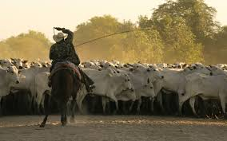
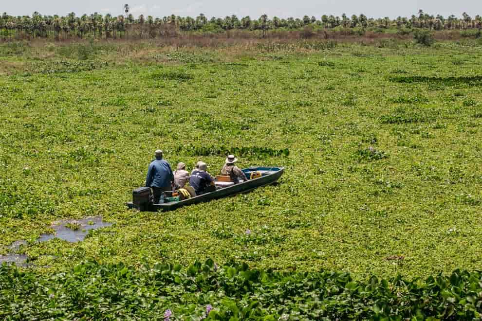
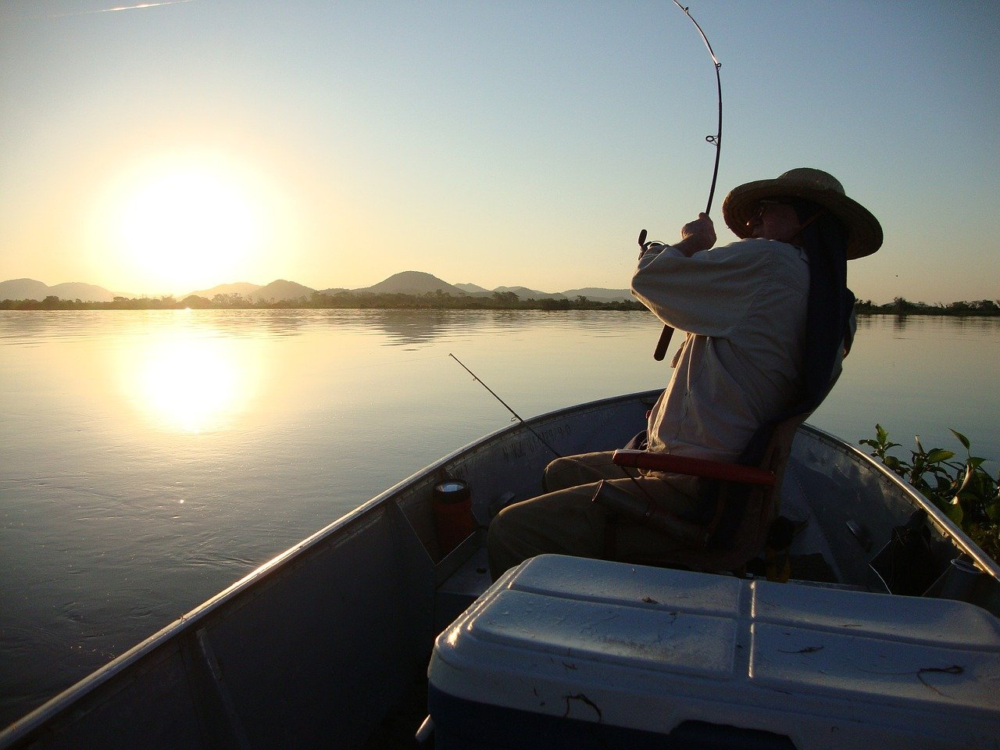

Ações
Antrópicas
Pecuária
As ações antrópicas no Pantanal datam do século XVIII, com a introdução da pecuária na região através dos colonizadores europeus. A expansão da pecuária sobre o Pantanal se deu de forma desorganizada e não sustentável, não se limitando as planícies secas semelhantes ao Cerrado se interiorizando pelas planícies alagáveis e matas ciliares.
Preoucupações hídricas
Atualmente acredita-se na presença de um rebanho estimado em 16 milhões de cabeças de gado no território pantanense. Se tornando uma parte fundamental da cultura dos habitantes do Pantanal vem trazendo diversos prejuízos no ecossitema.
Pautas sobre construções de hidrelétricas e canais fluviais vem sido discutidas, preocupando a comunidade científica que teme os danos ao equilíbrio hídrico fundamental do bioma.
Desmatamentos já vem sendo um problema devido ao pecuarismo e a agropecuária, ocasionanado fenômenos como assoreamento de rios, queimadas e destruição do habitat de diversas espécies, juntamente com seu equilíbrio na cadeia alimentar. Com a contruções de hidrelétricas teme-se a intesificação desses fenômenos, juntamente com o dano as comunidades marinhas dos rios locais.
Tráfico e garimpo
Com a grande presença de espécies endêmicas no bioma, o tráfico e a pesca tem se tornado uma dificuldade para as instituições de preservação, devido a proximidade com fronteiras internacionais que o bioma possui, dificultando a fiscalização do território.
A extração de pedras preciosas como o ouro vem se tornando de extrema relevância, a medida que estudos recentes feitos em peixes e jacarés apontam uma elevada taxa de mercúrio nos organismos desses animais, levando a crer que o descarte indevido de materiais está ocasionando um processo de bioacumulação de mercúrio ao longo da cadeia trófica.
Queimadas
Recentemente o Pantanal sofreu com diversas queimadas anormais tendo 30% de seu teritório atingido. Supões-se que tais queimadas tenham origens antrópicas, em fazendas, conforme aponta o levantamento de pontos e causas de ignição realizado pelos Ministério Públicos de Mato Grosso e de Mato Grosso do Sul.